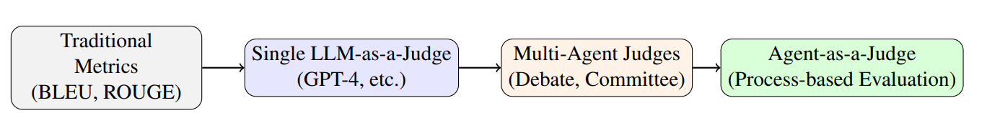
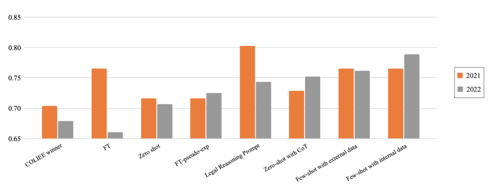
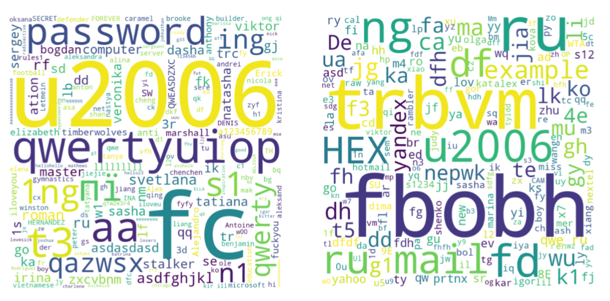
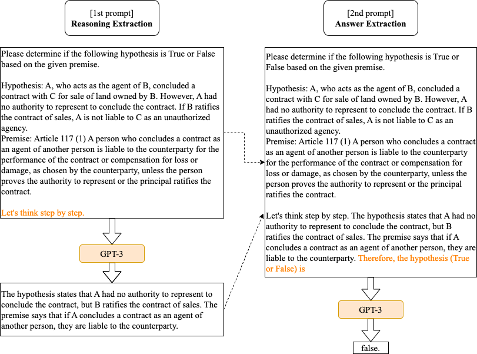
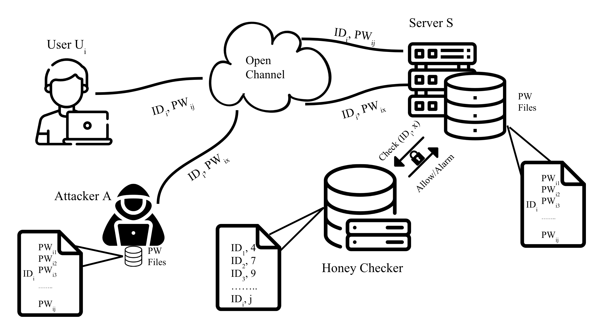
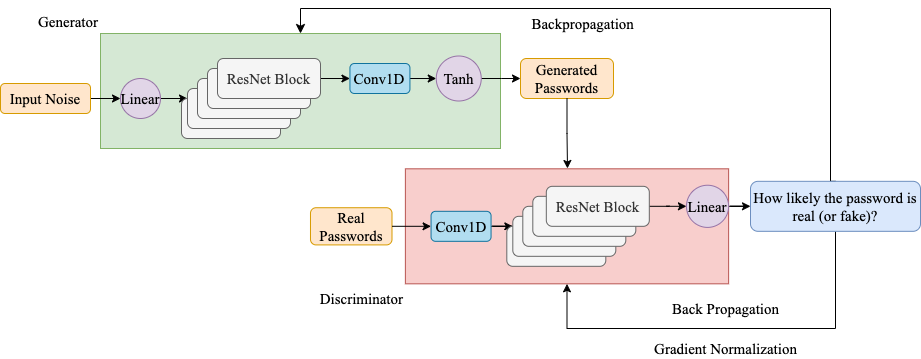
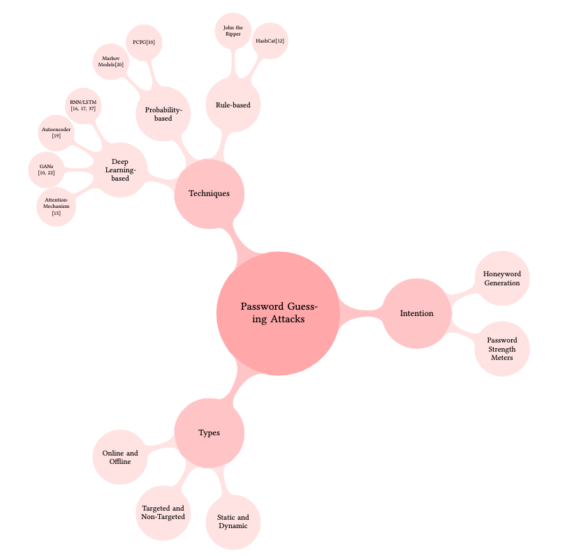

Applied Scientist — LLM Evaluation, NLP, Machine Learning
Fangyi Yu is an Applied Scientist on the Foundational Research team at Thomson Reuters, where she specializes in large language model (LLM) evaluation. Her work spans autonomous evaluation pipelines, LLM- and agent-as-a-judge methodologies, and the assessment of AI agents in high-stakes domains. She builds evaluation frameworks that help ensure advanced language models are reliable, fair, and aligned with real-world requirements.
Fangyi holds an MSc in Computer Science from Ontario Tech University and a BSc in Applied Mathematics from Donghua University. Her background spans machine learning, natural language processing, and AI safety, with prior contributions to privacy-preserving systems and human–AI interaction research. She has previously worked at Coursera and the Human Machine Lab at Ontario Tech, contributing to projects in AI security and trust.
Her focus is on bridging research and practical applications to advance AI evaluation science — with the goal of supporting trustworthy AI deployment in high-stakes domains.
- LLM evaluation & benchmarking
- LLM- and agent-as-a-judge methodologies
- Post-training data design (SFT, DPO)
- Natural language processing
- AI safety & alignment
- Python, SQL, Bash
- PyTorch, TensorFlow
- Hugging Face Transformers, TRL
- spaCy, NLTK
- Django, Flask
- Amazon Bedrock, SageMaker
- OpenAI & Anthropic APIs
- Docker, Git, Linux
- Weights & Biases
- Tableau
- Claude Code
- OpenAI Codex
- Cline
- GitHub Copilot
- Cursor
Nov 2023 - Present
- In-house LLM development: contribute to model selection, post-training, and release gates for domain-specific models supporting legal research workflows.
- Post-training data creation: design instruction-tuning and preference datasets using rubric-driven synthetic generation with human-in-the-loop QA.
- Auto-evaluation pipelines: build evaluation harnesses that run on every model drop, with task suites, reproducible seeds for stable comparisons.
- LLM-as-a-judge: implement multi-criteria rubric graders and multi-agent debate evaluation to reduce single-judge bias and improve reliability.
- Agent evaluation: assess tool-using agents with metrics for task success, tool-call accuracy, latency, and failure recovery in sandboxed environments.
- Cross-functional collaboration: partner with research, product, and legal subject-matter experts to translate evaluation results into model release criteria and product-ready guidance.
Jun 2023 - Sep 2023
- Built an enterprise propensity-to-purchase model combining binary classification for propensity scores with regression for ACV prediction, improving lead prioritization and sales targeting.
- Performed extensive feature engineering and exploratory data analysis across firmographic, demographic, and engagement data sources.
- Partnered with cross-functional stakeholders to scope requirements, communicate results, and iterate on modeling choices to maximize business impact.
Sep 2021 - Dec 2023
The Human Machine Lab at Ontario Tech University is an interdisciplinary research group focused on designing computer systems around human needs and capabilities, with projects spanning human–computer interaction, usable security, privacy, and artificial intelligence.
Advised by Dr. Miguel Vargas Martin on applied machine learning research:
- Published multiple peer-reviewed papers on applying machine learning techniques to authentication systems (see Google Scholar).
- Designed GAN-based password guessing models that outperformed prior benchmarks by 83%, and developed a GPT-3-based honeyword generation technique to accelerate password-breach detection.
- Conducted systematic literature reviews on machine learning applications in computer security.
- Proposed novel approaches to strengthen the usability and security of password authentication systems using natural language processing.
May 2022 - Dec 2022
Thomson Reuters Labs is the applied-research arm of Thomson Reuters, working with some of the world's most comprehensive legal, tax, and corporate datasets to advance AI for professional services.
Over an 8-month internship, I contributed to a legal text entailment research project and a named-entity recognition product initiative:
- Co-authored two peer-reviewed papers exploring prompt engineering techniques for large language models on legal reasoning tasks.
- Collaborated with research scientists to identify opportunities for applying state-of-the-art NLP methods to legal products.
- Evaluated zero-shot, few-shot, chain-of-thought prompting, and fine-tuning strategies across GPT-3 and T5 using the Hugging Face and OpenAI APIs for domain-specific reasoning.
- Benchmarked baseline and state-of-the-art models — including spaCy, Conditional Random Fields, and LegalBERT — on a highly imbalanced named-entity recognition dataset.
- Maintained rigorous documentation of literature reviews, data processing, and experimental results following lab standards.
Oct 2019 - Jul 2020
The AI Hub at Durham College partners with industry to deliver AI solutions that uncover business insights and drive productivity and growth.
- Built interactive dashboards on historical gold-market data using Tableau.
- Implemented machine learning models for time-series forecasting, with end-to-end documentation covering datasets, algorithms, APIs, data-flow diagrams, and optimization options.
- Presented data-driven insights and recommendations to business stakeholders.
Sep 2021 - Jan 2023
Ontario Tech University (UOIT)
GPA: 4.24 on a scale of 4.30
Location: Ontario, Canada
Sep 2019 - Jun 2020
Durham College
GPA: 4.83 on a scale of 5.00
Location: Ontario, Canada
Donghua University
Location: Shanghai, China

Fangyi Yu. arXiv preprint, 2025.
paper
Fangyi Yu, Lee Quartey, Frank Schilder. Findings of the Association for Computational Linguistics (ACL), 2023.
paper
Fangyi Yu, Miguel Vargas Martin. Conference on Detection of Intrusions and Malware & Vulnerability Assessment (DIMVA), 2023.
paper
Fangyi Yu, Lee Quartey, Frank Schilder. Natural Legal Language Processing Workshop (NLLP), 2022.
paper
Fangyi Yu, Miguel Vargas Martin. European Symposium on Research in Computer Security — STM Workshop (ESORICS), 2022.
paper
Fangyi Yu, Miguel Vargas Martin. IEEE European Symposium on Security and Privacy Workshops (EuroS&PW), 2021.
paper
Towards Data Science, April 2022.
A walkthrough of the lifecycle of a human-subjects research experiment — from formulating hypotheses and designing the study, to running pilots, recruiting participants, collecting and analyzing data, and reporting results.
read moreTowards Data Science, August 2021.
A hands-on tutorial on framing fake-news detection as a binary classification problem, building an NLP model from scratch, and deploying it as a Flask web application.
read moreTowards Data Science, July 2021.
A comprehensive guide to time-series analysis — covering core concepts and components, common statistical and machine-learning forecasting methods, and an end-to-end worked example predicting climate data.
read more